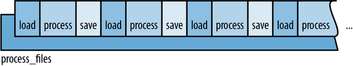
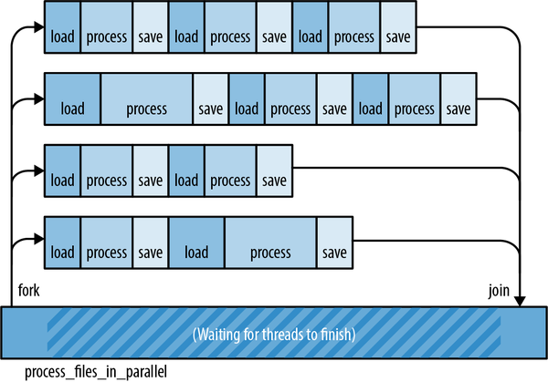
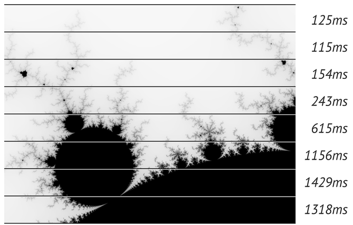
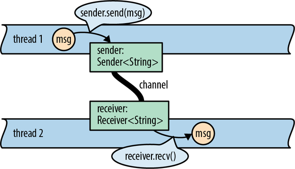
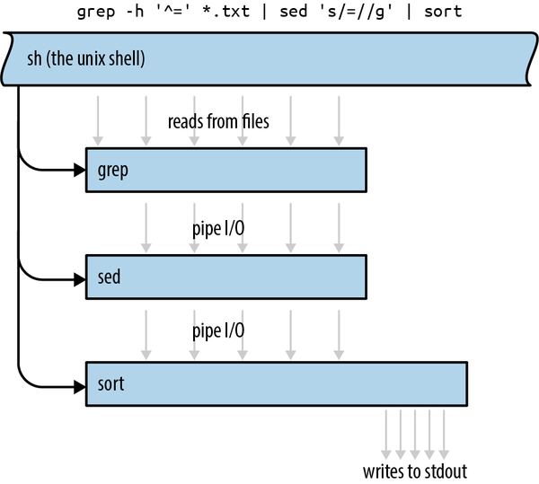
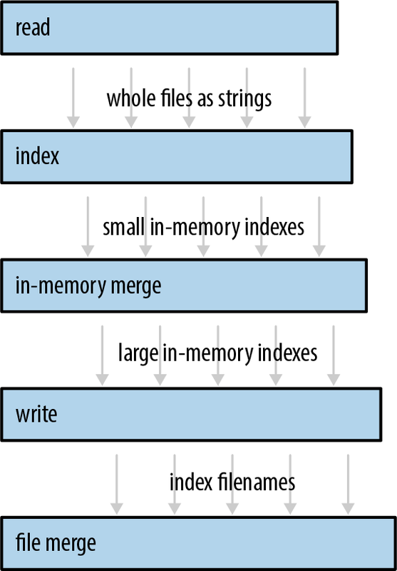

第 19 章 线程
从长远来看，使用那些允许无限制使用存储位置及其地址的机器导向语言来编写大型并发程序是不明智的。因为无论是否借助复杂的硬件机制，我们都无法让这样的程序具有可靠性。
佩尔·布林奇·汉森（1977 年）
通信的模式，其实就是并行处理模式的体现。
惠特·莫里斯
如果你在职业生涯中对于线程的处理方式发生了变化，那你并不孤单。这是很常见的情况。
在某个时候，你不得不去调试别人的多线程代码，而最终你会不得不得出结论：有些人真的不应该使用这些工具。
经验会让人对这类技术思路产生一种健康的怀疑态度，甚至可能会形成彻底的悲观情绪。这种情况还会因为偶尔出现的文章而加剧，这些文章会详细解释为什么某些显然正确的锁定机制根本不起作用。（这跟“内存模型”有关。）但最终，你会找到一种可以实际使用的并发处理方案，而无需不断犯错。你可以把几乎所有东西都塞进这种机制中，而且（如果你真的很擅长的话），你还会学会拒绝那些不必要的复杂性。
当然，这类表达方式其实相当多。系统程序员常用的表达方式包括以下几种：
-
一个后台线程，它有一个明确的任务，会定期被唤醒以执行该任务。 -
这些通用的工作队列能够通过与任务队列进行通信来与客户端交互。 -
这些管道负责将数据从一个线程传输到下一个线程，每个线程都承担一部分工作。 -
数据并行处理是一种计算方法，它假设（无论这种假设是否正确）整个计算机主要只是执行一项大型计算任务。因此，这项任务会被分解为多个子任务，并在多个线程上同时运行，从而让计算机的所有核心都能同时发挥作用。 -
一片由多个同步对象组成的海洋，多个线程可以访问相同的数据。通过使用基于低级原语如互斥锁的临时锁定机制，避免了竞态条件的发生。（Java 语言也内置了这种机制，它在 1990 年代和 2000 年代非常流行。） -
原子整数运算允许多个核心通过传递一个机器字大小的信息来进行通信。（不过，这比其他几种方式更难实现，除非交换的数据实际上只是整数值而已。实际上，通常使用的是指针来进行通信。）
随着时间的推移，你可能会能够使用多种这些方法，并安全地将它们结合起来使用。你将成为这一领域的大师。而如果其他人永远无法以任何方式修改该系统，那么一切都会变得非常美好。那些能够很好地利用线程的程序，其实都遵循着一些不成文的规则。
Rust 提供了一种更有效的方式来处理并发问题，它不是通过强制所有程序采用同一种编程风格来解决并发问题（对于系统程序员来说，这种做法根本无法解决问题），而是通过支持多种编程风格来安全地处理并发问题。那些“不成文的规则”被写进了代码中，并由编译器来强制执行。
你们已经听说过，Rust 能够让你编写安全、高效且具备并发性的程序。在这一章中，我们将展示如何实现这些功能。我们会介绍三种使用 Rust 进行线程处理的方法：
-
并行处理技术
-
频道/渠道
-
共享的可变状态
在下一章中，我们将扩展这一观点，涵盖异步代码。异步代码是一种轻量级的协作式并发机制，非常适合用于网络服务。异步代码和线程是两种不同的并发处理方式，但它们都基于相同的 Rust 语言概念。由于线程更为基础且简单，所以我们先介绍它们。
在学习有关 Rust 中线程的知识时，你将运用迄今为止所掌握的语言知识。Rust 在处理引用、可变性以及生命周期方面所采取的做法，在单线程程序中已经非常有价值了，但在并发编程中，这些规则的重要性更加凸显。它们使得你能够更轻松地扩展自己的工具集，能够快速而正确地编写多线程代码——无需怀疑、无需愤世嫉俗、无需恐惧。
分叉-连接并行处理
线程最简单的应用场景出现在我们需要同时执行多个完全独立的任务时。
例如，假设我们正在对大量文档进行自然语言处理工作。我们可以编写一个循环来实现这一操作：
fnprocess_files(filenames:Vec<String>)->io::Result<()>{fordocumentinfilenames{lettext=load(&document)?;// read source fileletresults=process(text);// compute statisticssave(&document,results)?;// write output file}Ok(())}
该程序的运行过程如图 19-1 所示。

图 19-1. 单线程环境下的 process_files() 执行过程
由于每个文档都需要分别进行处理，因此可以通过将语料库分割成多个部分，然后在不同的线程上分别处理这些部分来加速这一任务。如图 19-2 所示。
这种模式被称为“分叉-合并并行处理”。所谓“分叉”，指的是启动一个新的线程；“合并”线程则意味着等待该线程完成其任务。我们已经在第二章中见过这种技术了：我们就是利用它来加速 Mandelbrot 程序的运行的。
分叉并行处理具有一些优点，使得它非常吸引人：
-
其实非常简单。连接操作很容易实现，而 Rust 语言则让这一操作能够轻松正确地执行。
-
这种方式避免了瓶颈现象。在分叉合并操作中，不会出现共享资源被锁定的情况。每个线程只有在最后才会等待另一个线程的完成。在此期间，每个线程都可以自由运行。这有助于降低任务切换所带来的开销。
-
性能优化其实很简单。在最佳情况下，通过启动四个线程，我们可以在原来四分之一的时间内完成工作。图 19-2 指出了一个可能导致无法达到理想加速的原因：我们可能无法将任务均匀分配给所有线程。另一个需要警惕的问题是，有时在线程合并结果之后，还需要一些时间来整合各个线程的计算结果。也就是说，如果完全隔离各个任务，可能会引入一些额外的工作。不过，除了这两个问题之外，任何受 CPU 限制的程序，只要能够将其任务分解为独立单元，都有望获得显著的性能提升。 -
判断程序的正确性其实很简单。只要各个线程能够真正独立运行，那么一个分叉并行程序就是确定性的。就像 Mandelbrot 程序中的计算线程那样，无论线程的速度如何变化，程序始终会产生相同的结果。这是一种没有竞态条件的并发模型。

图 19-2. 采用分叉合并策略进行多线程文件处理
目前，我们还是继续以自然语言处理为例来进行说明。我们将展示几种将分治-并行模式应用于 process_files 函数的方法。
创造并加入
函数 std::thread::spawn 会创建一个新的线程：
usestd::thread;thread::spawn(||{println!("hello from a child thread");});
它只需要一个参数，即一个 FnOnce 闭包或函数。Rust 会创建一个新的线程来执行该闭包或函数的代码。这个新线程是一个真正的操作系统线程，拥有自己的堆栈空间，就像 C+、C#和 Java 中的线程一样。
这里有一个更典型的例子，它使用了 spawn 来实现之前提到的 process_files 函数的并行版本：
usestd::{io,thread};fnprocess_files_in_parallel(filenames:Vec<String>)->io::Result<()>{// Divide the work into several chunks.constNTHREADS:usize=8;letworklists=split_vec_into_chunks(filenames,NTHREADS);// Fork: Spawn a thread to handle each chunk.letmutthread_handles=vec![];forworklistinworklists{thread_handles.push(thread::spawn(move||process_files(worklist)));}// Join: Wait for all threads to finish.forhandleinthread_handles{handle.join().unwrap()?;}Ok(())}
让我们逐行分析这个函数。
fnprocess_files_in_parallel(filenames:Vec<String>)->io::Result<()>{
我们的新函数具有与原始 process_files 相同的类型签名，因此可以方便地作为它的替代品来使用。
// Divide the work into several chunks.constNTHREADS:usize=8;letworklists=split_vec_into_chunks(filenames,NTHREADS);
我们使用一个实用函数 split_vec_into_chunks 来处理工作分配问题，具体功能在此不赘述。最终得到的结果 worklists 实际上是一个向量向量结构，其中包含了对原始向量 filenames 进行八次均匀划分后的结果。
// Fork: Spawn a thread to handle each chunk.letmutthread_handles=vec![];forworklistinworklists{thread_handles.push(thread::spawn(move||process_files(worklist)));}
我们会为每个 worklist 创建一个线程。每次调用 thread::spawn 都会返回一个叫做 JoinHandle 的值，我们稍后会用到这个数值。目前，我们将所有的 JoinHandle 值放入一个向量中。
注意一下，我们是如何将文件名列表传递给工作线程的：
-
worklist是由for循环在父线程中定义并填充的。 -
一旦
move被创建出来，worklist就会被放入到这个闭包中。
这些操作非常便宜。就像我们在第 4 章中提到的那些操作一样，那些 String 数据并没有被复制。实际上，没有任何资源被分配或释放。唯一被移动的数据就是 Vec 本身：三个机器字位的数据。
你创建的几乎每个线程都需要代码和数据来启动运行。而 Rust 的闭包结构很方便地包含了你想要的任何代码和任何数据。
继续前进吧：
// Join: Wait for all threads to finish.forhandleinthread_handles{handle.join().unwrap()?;}
我们使用之前收集到的 JoinHandle 对象的 .join() 方法来等待所有八个线程完成执行。为了保证程序的正确性，通常需要挂起这些线程——因为即使在其他线程仍在运行的情况下，Rust 程序也会在 main 函数返回时立即终止。此时不会调用析构函数，只是挂起那些额外的线程而已。如果你不希望这样做，请确保在从 main 返回之前，先挂起所有你关心的线程。
如果我们能够成功完成这个循环，那就意味着所有八个子线程都已完成任务。因此，我们的函数将以返回 Ok(()) 作为结束。
Ok(())}
跨线程的错误处理
在我们示例中用来连接子线程的代码其实比看起来要复杂一些，因为涉及到错误处理的问题。让我们再来看看那一行代码：
handle.join().unwrap()?;
.join() 方法为我们做了两件很棒的事情。
首先， handle.join() 会返回一个 std::thread::Result ，如果子线程发生了恐慌，那么这个错误就会被记录下来。这使得 Rust 中的多线程处理比 C++要强大得多。在 C++中，访问超出数组边界的行为是一种未定义的行为，而且无法保护系统其他部分的稳定性。而在 Rust 中，恐慌行为是安全的，并且只会在单个线程中发生。线程之间的界限就像一道防火墙，可以防止恐慌信息从一个线程传播到其他依赖该线程的线程上。因此，一个线程中的恐慌只会作为错误被报告给其他线程。整个程序仍然可以轻松恢复。
在我们的程序中，我们没有尝试任何复杂的 panic 处理机制。相反，我们立即使用 .unwrap() 来断言 Result 是一个 Ok 的结果，而不是 Err 的结果。如果子线程发生了 panic，那么这个断言就会失效，从而导致父线程也会发生 panic。我们明确地将 panic 从子线程传递到了父线程。
其次， handle.join() 会将子线程的返回值传递回父线程。我们传递给 spawn 的闭包返回值的类型就是 io::Result<()> ，因为 process_files 返回的就是 io::Result<()> 。这个返回值不会被丢弃。当子线程完成工作后，它的返回值会被保存起来，然后 JoinHandle::join() 会将这个值传递回父线程。
在程序中， handle.join() 返回的完整类型就是 std::thread::Result<std::io::Result<()>> 。 thread::Result 属于 spawn / join API 的组成部分；而 io::Result 则是我们应用程序中的一部分。
所有这些看起来可能相当复杂。不过请记住，这只不过是一行代码而已。再将其与其他语言进行比较吧。在 Java 和 C#中，子线程中的异常会被输出到终端，然后被忽略。而在 C++中，默认情况下会终止进程。在 Rust 中，错误被表示为 Result 值（数据），而不是异常（控制流）。它们像其他数据一样在多个线程之间传递。每当使用低级线程 API 时，你都需要编写复杂的错误处理代码。但既然必须编写这些代码，那么 Result 这样的工具就非常实用了。
在多个线程之间共享不可变数据
假设我们的分析需要大量的英语单词和短语的数据库：
// beforefnprocess_files(filenames:Vec<String>)// afterfnprocess_files(filenames:Vec<String>,glossary:&GigabyteMap)
这个 glossary 将会非常重要，所以我们是通过引用传递它的。那么，如何更新 process_files_in_parallel 以将词汇表传递给工作线程呢？
这种明显的变化是无效的：
fnprocess_files_in_parallel(filenames:Vec<String>,glossary:&GigabyteMap,)->io::Result<()>{...forworklistinworklists{thread_handles.push(spawn(move||process_files(worklist,glossary)),// error);}...}
我们只是在函数中添加了一个 glossary 参数，并将其传递给 process_files 。Rust 系统会发出警告：
error: borrowed data escapes outside of function|24 | glossary: &GigabyteMap,| -------- - let's call the lifetime of this reference `'1`| || `glossary` is a reference that is only valid in the function body...36 | spawn(move || process_files(worklist, glossary)), // error| ^^^^^^^^^^^^^^^^^^^^^^^^^^^^^^^^^^^^^^^^^^^^^^^^| || `glossary` escapes the function body here| argument requires that `'1` must outlive `'static`
需要注意的是，Rust 确实有权拒绝这种代码！按照我们编写这个函数的方式，某个线程可能会遇到 I/O 错误，导致 process_files_in_parallel 在其他线程完成之前就终止了。这样一来，子线程可能会在主线程释放资源后尝试使用这个词汇表。这种情况会导致竞争行为，而具体结果则难以预测，甚至可能让主线程处于不利地位。Rust 不允许这种情况发生。
看起来，让多个线程共享引用数据是一个相当复杂的问题。实际上，我们已经在“Closures That Steal”这个案例中见过类似的解决方案。当时，我们的解决方案是将数据所有权转移给新的线程，使用 move 这种闭包方式来实现。不过在这里，这种方法并不适用，因为我们需要多个线程来共享相同的数据。一个安全的替代方案是为每个线程分别管理整个词汇表，但鉴于词汇表的体积较大，我们尽量避免这种方案。幸运的是，标准库提供了两种解决此问题的方法：原子引用计数和具有作用域限制的线程。
我们在《Rc 和 Arc：共享所有权》一文中介绍了 Rust 中的引用计数类型。现在是时候实际使用这些类型了：
usestd::sync::Arc;fnprocess_files_in_parallel(filenames:Vec<String>,glossary:Arc<GigabyteMap>,)->io::Result<()>{...forworklistinworklists{// This call to .clone() only clones the Arc and bumps the// reference count. It does not clone the GigabyteMap.letglossary_for_child=glossary.clone();thread_handles.push(spawn(move||process_files(worklist,&glossary_for_child)));}...}
我们已经改变了 glossary 的类型。为了并行运行分析过程，调用者必须提供一个 Arc<GigabyteMap> ，这是一个指向存储在堆中的 GigabyteMap 的智能指针，而 GigabyteMap 则通过 Arc::new(giga_map) 进行访问。
通过这一修改，该程序能够正常编译和运行，因为它不再依赖于变量的生命周期。只要任何线程拥有 Arc<GigabyteMap> ，那么映射对象就能持续存在，即使父线程提前终止了运行。这样一来，就不会出现数据竞争问题了，因为 Arc 中的数据是不可变的。
Arc 的设计目的是实现共享所有权，这是在不同线程之间传递值的常见方式。在这个具体案例中，使用具有特定作用域的线程也是一种可行的选择。在第二章中，我们使用了 std::thread::scope 来将曼德布罗特集图像的计算任务分配给八个线程进行处理。类似的代码在这里同样适用：
fnprocess_files_in_parallel(filenames:Vec<String>,glossary:&GigabyteMap,)->io::Result<()>{...std::thread::scope(|scope|{// Fork: Spawn a thread to handle each chunk.letmutthread_handles=vec![];forworklistinworklists{thread_handles.push(scope.spawn(move||process_files(worklist,glossary)));}// Join: Wait for all threads to finish.forhandleinthread_handles{handle.join().unwrap()?;}Ok(())})// <-- Join backstop: thread::scope() waits for all remaining threads}
请注意，我们已经从使用 Arc<GigabyteMap> 的方式转换回使用普通的引用方式。现在我们可以在多个工作线程之间共享它，因为这些线程是具有作用域的线程，它们一定会在完成 std::thread::scope 返回之前完成任务。
基本的 std::thread::spawn 函数要求其闭包参数在 'static 生命周期内保持有效。这样就能防止我们在不安全的情况下使用引用进行共享。而 Scope::spawn 方法的限制则没那么严格，其闭包参数只需在对应的 std::thread::scope() 调用结束之前就保持有效，因为 std::thread::scope 会在所有子线程完成工作后再返回。由于生命周期要求的宽松，我们的线程可以直接使用 glossary 引用的对象，而无需进行引用计数操作。
使用作用域线程的代码通常可以跳过 join() 阶段，因为所有生成的线程都会自动加入执行。在我们的例子中，我们仍然需要显式调用 handle.join() ，因为我们想要检查线程返回的值是否存在错误。不过，如果我们确实发现了错误并提前返回， std::thread::scope 仍然会等待剩余的线程完成执行，这是出于安全考虑所必需的。
Rayon
《Rayon 图书馆》由 Niko Matsakis 和 Josh Stone 编写，是实现分治并行处理的更加强大工具。它提供了两种同时运行任务的方式：
userayon::prelude::*;// "do 2 things in parallel"let(v1,v2)=rayon::join(fn1,fn2);// "do N things in parallel"giant_vector.par_iter().for_each(|value|{do_thing_with_value(value);});
rayon::join(fn1, fn2) 方法直接调用这两个函数并返回两个结果。 .par_iter() 方法则创建了一个 ParallelIterator 对象，该对象包含 map 、 filter 以及其他方法的功能，类似于 Rust 中的 Iterator 。在这两种情况下，Rayon 都会利用自己的工作线程来分配任务。你只需告诉 Rayon 哪些任务可以并行处理，然后 Rayon 会负责管理线程并尽可能合理地分配任务。
图 19-3 中的图表展示了两种处理 giant_vector.par_iter().for_each(...) 调用的方式。(a) 在这种情况下，Rayon 会像为每个向量中的元素创建一个线程一样来处理任务。(b) 实际上，Rayon 会在每个 CPU 核心上运行一个工作线程，这种方式更为高效。这个工作线程池会被所有程序中的线程共享。当同时有数千个任务到来时，Rayon 会将这些任务分配给他们各自对应的工作线程来处理。

图 19-3. 理论上的射线与实际情况下的射线
这是使用 Rayon 的 process_files_in_parallel 版本的代码，而 process_file 则只使用了 &str 而不是 Vec<String> ：
userayon::prelude::*;fnprocess_files_in_parallel(filenames:Vec<String>,glossary:&GigabyteMap,)->io::Result<()>{filenames.par_iter().map(|filename|process_file(filename,glossary)).reduce_with(|r1,r2|{ifr1.is_err(){r1}else{r2}}).unwrap_or(Ok(()))}
这个代码的长度更短，难度也更低，相比使用 std::thread::spawn 的版本来说。让我们逐行来看一下：
-
首先，我们使用
filenames.par_iter()来创建一个并行迭代器。 -
我们在每个文件名上使用
.map()来调用process_file。这样就能得到一系列由io::Result<()>值组成的ParallelIterator结果。 -
我们使用
.reduce_with()来合并结果。在这里，我们保留了第一个错误（如果有的话），而忽略了其余的错误。如果我们想要汇总所有错误，或者打印出这些错误，就可以在这里进行相应操作。当需要传递一个
.map()闭包时，.reduce_with()方法也非常实用。这个闭包在成功执行后能够返回一个有用的结果。然后，你可以将.reduce_with()这个闭包传递给 .reduce_with() ，因为这个闭包知道如何组合两个成功的结果。 -
reduce_with返回的是一个Option，只有当filenames为空时，才会等于None。在这种情况下，我们使用Option的.unwrap_or()方法来得到Ok(())这个结果。
在幕后，Rayon 通过一种称为“工作抢夺”的技术，动态地平衡各个线程的工作负载。这种方式通常能更有效地让所有 CPU 保持忙碌状态，而无需像之前那样手动分配任务，比如“先创建线程再加入执行”。
顺便说一下，我们选用 map 方法和 reduce 方法并非偶然。由谷歌和 Apache Hadoop 推广的 MapReduce 编程模型与分治策略有很多相似之处。可以说，MapReduce 编程模型是一种将分治策略应用于分布式数据查询的方法。
重新审视曼德布罗特集合
在第二章中，我们使用了分叉并行处理技术来渲染曼德布罗特集。这一方法使得渲染速度提高了四倍——相当出色，不过考虑到程序在八核机器上运行，同时启动了八个工作线程，其性能其实还有更大的提升空间！
问题在于，我们没有将计算任务分配得足够均匀。计算图像中的一个像素意味着需要运行一个循环（详见“曼德布罗特集究竟是什么”一文）。结果表明，图像中那些颜色较浅的区域，由于循环执行的次数较少，因此渲染速度更快；而黑色区域则需要进行完整的 255 次循环运算。所以，虽然我们将图像区域划分为大小相同的水平条带，但实际上各个区域的计算负担并不均衡，如图 19-4 所示。

图 19-4. Mandelbrot 算法中不均匀的工作分配情况
要使用 Rayon，我们需要在 main.rs 中添加以下代码：
userayon::prelude::*;
而这对于 Cargo.toml 文件来说则是这样的：
[dependencies]rayon="1.12.0"
以下是代码。第一行和最后一行属于我们在《一个并发的曼德布罗特程序》中介绍过的 main 函数的一部分，不过我们修改了渲染相关的代码，而中间的部分则保持不变。
let(width,height)=bounds;letmutpixels=vec![0;width*height];letbands:Vec<(usize,&mut[u8])>=pixels.chunks_mut(width).enumerate().collect();bands.into_par_iter().for_each(|(i,band)|{lettop=i;letband_bounds=(width,1);letband_upper_left=pixel_to_point(bounds,(0,top),upper_left,lower_right);letband_lower_right=pixel_to_point(bounds,(width,top+1),upper_left,lower_right);render(band,band_bounds,band_upper_left,band_lower_right);});write_image(&args[1],&pixels,bounds).expect("error writing PNG file");
首先，我们创建 bands ，这是一个任务集合，这些任务将被传递给 Rayon 模块。每个任务只是一个包含 (usize, &mut [u8]) 类型的元组：即行号，因为计算过程中需要指定行号；而 pixels 则用于填充数据。我们使用 chunks_mut 方法来将图像缓冲区拆分成各行， enumerate 用于为每一行附加一个行号，最后使用 collect 将所有数字-切片对合并成一个向量。（我们需要一个向量，因为 Rayon 只支持由数组和向量构成的并行迭代器。）
经过这些修改后，该程序在 8 核的机器上运行时，所使用的核心数量约为 7.75 个。相比之前手动分配任务的情况，现在的运行速度提升了 75%。此外，代码长度也有所减少，这充分体现了让工具箱来处理任务的好处，而不是由我们自己来完成工作。
频道/渠道
通道是一种单向的传输管道，用于将一个线程中的值传输到另一个线程中。换句话说，它是一种线程安全的队列。
图 19-5 展示了通道的使用方式。它们类似于 Unix 管道：一端用于发送数据，另一端用于接收数据。这两个端通常属于两个不同的线程。不过，虽然 Unix 管道用于发送字节数据，而通道则用于发送 Rust 中的值。 sender.send(item) 可以向通道中发送一个值； receiver.recv() 则可以从中取出一个值。所有权会从发送线程转移到接收线程。如果通道为空， receiver.recv() 会一直等待有值被发送进来。

图 19-5：一个用于 String 的通道：字符串 msg 的所有权从线程 1 转移到了线程 2。
这并不是什么新技术。Erlang 使用独立进程和消息传递的方式已经存在了 30 年之久。而 Unix 管道技术则已经存在了近 50 年。人们通常认为管道技术能够提供灵活性和可组合性，但实际上它们同时具备上述所有特性。图 19-6 展示了一个 Unix 管道的例子。当然，所有这三个程序同时运行是完全可能的。
Rust 通道比 Unix 管道更快。发送一个值时，实际上是将其移动过去，而不是复制它；而且这种移动操作在传输包含大量数据的数据结构时仍然非常快速。

图 19-6. Unix 管道处理的执行过程
正在发送数值数据
在接下来的几节内容中，我们将使用通道来构建一个能够创建倒排索引的并发程序。倒排索引是搜索引擎的核心组成部分之一。所有的搜索引擎都是基于特定的文档集合来工作的。而倒排索引则是一种数据库结构，它记录了哪些单词出现在了哪些位置。
我们将展示那些与线程和通道相关的代码部分。整个程序的代码量并不大，总共大约一千行代码而已。
我们的程序结构类似于流水线模型，如图 19-7 所示。流水线只是使用通道的众多方式之一——我们稍后会讨论其他一些用途——但流水线是一种将并发性引入现有单线程程序的简单方法。
我们将使用总共五个线程，每个线程负责执行不同的任务。在程序的运行期间，每个线程都会持续不断地产生输出。例如，第一个线程只需将磁盘中的源文档一个一个地读入内存中即可。（我们希望有一个线程来执行这个任务，因为这里我们将编写尽可能简单的代码，使用 fs::read_to_string 这个阻塞式 API。我们不想让 CPU 在磁盘读取数据的过程中处于空闲状态。）这个阶段的输出结果是一个包含多个 String 的数据结构，每个文档对应一个这样的数据结构。因此，这个线程通过一组 String 的数据通道与下一个线程相连。

图 19-7. 索引构建流程。图中的箭头表示数据从一个线程通过通道传输到另一个线程的过程（磁盘 I/O 操作未在图中展示）
我们的程序将首先创建一个线程来读取文件。假设 documents 是一个包含多个文件名的向量。用于启动文件读取线程的代码如下所示：
usestd::sync::mpsc;usestd::{fs,thread};let(sender,receiver)=mpsc::channel();lethandle=thread::spawn(move||{forfilenameindocuments{lettext=fs::read_to_string(filename)?;ifsender.send(text).is_err(){break;}}Ok(())});
通道是 std::sync::mpsc 模块的一部分。我们稍后会解释“通道”这个名称的含义；现在，我们先来看看这段代码的运作方式。我们首先创建了一个通道：
let(sender,receiver)=mpsc::channel();
channel 函数返回一对值：发送者和接收者。其实，底层队列的数据结构是一个实现细节，标准库并未对外展示这一特性。
这些通道都是已定义类型的。我们将使用这个通道来发送每个文件的文本数据。因此，我们有 sender 个类型为 Sender<String> 的通道，还有 receiver 个类型为 Receiver<String> 的通道。如果我们愿意，也可以明确指定使用字符串类型的通道，只需写成 mpsc::channel::<String>() 即可。不过，我们选择让 Rust 的类型推断自动完成这一工作。
lethandle=thread::spawn(move||{
与之前一样，我们仍然使用 std::thread::spawn 来启动一个线程。 sender 的所有权（但不包括 receiver ）将通过这个 move 的闭包转移到了新线程中。
接下来的几行代码只是从磁盘中读取文件而已：
forfilenameindocuments{lettext=fs::read_to_string(filename)?;
在成功读取文件后，我们会将文件中的文本发送到通道中：
ifsender.send(text).is_err(){break;}}
send 和 recv 这两个方法都返回 Result 类型的数据。不过，只有当通道的另一端发生中断时，这两个方法才会失败。如果 Receiver 发生中断，那么 send 的调用也会失败——因为否则的话，这些数据就会永远留在通道中。没有 Receiver ，任何线程都无法获取这些数据。同样，如果通道中没有任何数据等待处理，而 Sender 发生中断，那么 recv 的调用也会失败——因为否则的话，recv 会永远等待下去。没有 Sender ，任何线程也无法发送下一个数据。中断通道的端点是一种“挂断连接”的方式，当你完成操作后，连接就会被关闭。
在我们的代码中，只有当接收方的线程提前终止时， sender.send(text) 才会出错。这种情况在使用通道的代码中很常见。无论这是故意为之还是由于错误导致的，我们的读取线程能够安静地关闭自己都是可以接受的。
当这种情况发生时，或者该线程读完了所有文档后，它会返回 Ok(()) ：
Ok(())});
当然，就像其他编程语言一样，Rust 在错误处理方面也提供了许多可能性。当发生错误时，我们可以直接使用 println! 来打印出错误信息，然后继续处理下一个文件。我们也可以通过与处理数据相同的通道来传递错误信息，这样就形成了一个专门用于错误处理的通道——或者创建另一个专门用于错误处理的通道。我们在这里选择的方法既简洁又高效：我们直接使用 ? 运算符，因此不需要大量的样板代码，也不需要使用像 Java 那样显式的 try/catch 语法。不过，即使如此，错误也不会被忽视。
为了便于使用，我们的程序将所有这些代码封装在一个函数中，该函数同时返回了 receiver （我们尚未使用）以及新线程的 JoinHandle 。
fnstart_file_reader_thread(documents:Vec<PathBuf>,)->(mpsc::Receiver<String>,thread::JoinHandle<io::Result<()>>){let(sender,receiver)=mpsc::channel();lethandle=thread::spawn(move||{...});(receiver,handle)}
请注意，这个函数会启动新的线程，然后立即返回。对于流程的每一个阶段，我们都会编写一个这样的函数。
接收值
现在，我们有一个线程正在运行一个循环，该循环会发送数值。我们可以再创建一个线程，这个线程也会运行一个循环，并且会调用 receiver.recv() 。
whileletOk(text)=receiver.recv(){do_something_with(text);}
不过， Receiver 是可迭代的，所以可以用更简洁的方式来表达这个：
fortextinreceiver{do_something_with(text);}
这两个循环是等效的。无论我们以何种方式编写代码，当控制流到达循环的顶端时，如果通道为空，那么接收线程将会阻塞，直到其他线程发送一个值为止。当通道为空且 Sender 被丢弃时，循环才会正常结束。在我们的程序中，这种情况会在读取线程结束时自然发生。那个线程正在使用一个闭包来持有变量 sender ；当闭包结束时， sender 就会被丢弃。
现在我们可以编写流程第二阶段的代码了：
fnstart_file_indexing_thread(texts:mpsc::Receiver<String>,)->(mpsc::Receiver<InMemoryIndex>,thread::JoinHandle<()>){let(sender,receiver)=mpsc::channel();lethandle=thread::spawn(move||{for(doc_id,text)intexts.into_iter().enumerate(){letindex=InMemoryIndex::from_single_document(doc_id,text);ifsender.send(index).is_err(){break;}}});(receiver,handle)}
该函数会创建一个线程，该线程从一个通道接收 String 值（ texts ），并将 InMemoryIndex 值发送到另一个通道（ sender 或 receiver ）。这个线程的任务是将第一阶段中加载到的每个文件都处理成一个小规模的单文件格式，即内存中的倒排索引结构。
这个线程的主循环非常简洁。所有与文档索引相关的操作都是由函数 InMemoryIndex::from_single_document 完成的。我们在这里不会展示其源代码，但该函数会在单词边界处分割输入字符串，并生成一个将单词映射到位置列表的映射表。
这个阶段不执行任何输入/输出操作，因此无需处理 io::Error 这样的数据。它返回的是 () 而不是 io::Result<()> 。
运行管道系统
剩下的三个阶段在设计上非常相似。每个阶段都需要使用前一个阶段生成的 Receiver 作为数据输入。在接下来的流程中，我们的目标是将所有小索引合并成一个大的索引文件。我们找到的最快实现方式就是分三个阶段来完成这项工作。这里不会展示具体的代码，只展示这三个函数的类型签名。完整的源代码可以在线上获取。
首先，我们将这些索引合并到内存中，直到它们变得过于庞大（第三阶段）：
fnstart_in_memory_merge_thread(file_indexes:mpsc::Receiver<InMemoryIndex>,)->(mpsc::Receiver<InMemoryIndex>,thread::JoinHandle<()>)
我们将这些大型索引写入磁盘（阶段 4）：
fnstart_index_writer_thread(big_indexes:mpsc::Receiver<InMemoryIndex>,output_dir:&Path,)->(mpsc::Receiver<PathBuf>,thread::JoinHandle<io::Result<()>>)
最后，如果我们有多个大文件，我们可以使用基于文件的合并算法来合并这些文件（阶段 5）：
fnmerge_index_files(files:mpsc::Receiver<PathBuf>,output_dir:&Path,)->io::Result<()>
最后这个阶段不会返回 Receiver ，因为此时已经是行的末尾了。它只会生成一个输出文件到磁盘中。同样，这个阶段也不会返回 JoinHandle ，因为我们没有为此阶段创建线程。所有操作都在调用者的线程上完成。
现在我们来看看用于启动线程并检查错误的代码：
fnrun_pipeline(documents:Vec<PathBuf>,output_dir:PathBuf,)->io::Result<()>{// Launch all five stages of the pipeline.let(texts,h1)=start_file_reader_thread(documents);let(pints,h2)=start_file_indexing_thread(texts);let(gallons,h3)=start_in_memory_merge_thread(pints);let(files,h4)=start_index_writer_thread(gallons,&output_dir);letresult=merge_index_files(files,&output_dir);// Wait for threads to finish, holding on to any errors that they encounter.letr1=h1.join().unwrap();h2.join().unwrap();h3.join().unwrap();letr4=h4.join().unwrap();// Return the first error encountered, if any.// (As it happens, h2 and h3 can't fail: those threads// are pure in-memory data processing.)r1?;r4?;result}
和之前一样，我们继续使用 .join().unwrap() 来将子线程中的恐慌情况传播到主线程中。这里唯一不同之处在于，我们没有立即使用 ? ，而是将 io::Result 的值暂存起来，直到所有四个线程都连接完毕。
管道系统就像制造工厂中的装配线：其性能受最慢阶段的生产能力限制。一条全新的、未经优化的装配线可能就像单位生产那样缓慢，但经过调整的装配线则能发挥更好的效能。在我们的案例中，测量结果显示第二阶段是瓶颈环节。我们的索引线程使用 .to_lowercase() 和 .is_alphanumeric() ，因此它花费大量时间在处理 Unicode 字符方面。而位于索引阶段之后的其他阶段则大部分时间都在等待输入，处于停滞状态。
这意味着我们的执行速度应该能够更快。当我们解决了瓶颈问题之后，并行性就会提高。现在您已经了解了如何使用通道，而且我们的程序由多个独立的代码模块组成，因此很容易找到解决第一个瓶颈的方法。我们可以像处理其他代码一样，为第二阶段手动优化代码；或者将工作分解为两个或更多的阶段；又或者同时运行多个文件索引线程。
频道功能和性能表现
在 std::sync::mpsc 中， mpsc 部分表示多生产者、单消费者模式。这是对 Rust 的通道所提供的通信类型的简洁描述。
在我们的示例程序中，通道的作用是将数据从一个发送者传递给一个接收者。这种情况相当常见。不过，Rust 中的通道也支持多个发送者，比如当需要一个线程来处理来自多个客户端线程的请求时，就像图 19-8 所示。

图 19-8. 一个通道同时接收来自多个发送者的请求
Receiver<T> 无法被克隆。因此，如果你需要多个线程从同一个通道中获取数据，那么你需要一种不同的通道类型——多消费者通道。 flume 这个框架包提供了这样的通道。在本章的后面部分，我们还会介绍如何自己实现这种通道。
Rust 的通道实现经过了精心的优化。当创建一个通道时，Rust 使用了一种特殊的“一次性”队列实现。如果你只向通道中发送一个元素，那么开销会非常小。如果你发送第二个元素，Rust 会切换到另一种队列实现。实际上，这种实现是为了长期运行而设计的，它能够让通道在传输多个元素时仍然保持低开销。如果你克隆了 Sender ，Rust 则需要使用另一种实现方式，这种实现在多个线程同时向通道发送元素时也能保持稳定。不过，这三种实现中速度最慢的一种仍然是一种无锁队列。因此，发送或接收一个元素最多只需要几次原子操作、一次堆分配，再加上一次移动操作而已。只有当队列为空时，才需要调用系统调用，此时接收线程则需要让自身进入休眠状态。当然，在这种情况下，通道的吞吐量仍然不会达到最大值。
尽管进行了大量的优化工作，但在处理通道数据时，应用程序仍容易犯下一个错误：将数据发送的速度超过了数据接收和处理的速率。这会导致大量的数据不断积压在通道中。例如，在我们的程序中，我们发现文件读取线程（阶段 1）读取文件的速度远远快于文件索引线程（阶段 2）对文件进行索引的速度。结果就是，大量的原始数据从磁盘中被读取出来，然后立即被放入队列中。
在这里，Rust 再次借鉴了 Unix 管道机制。Unix 采用一种巧妙的方法来实现反向压力机制，使得那些传输速度较快的进程不得不减速：Unix 系统中的每个管道都有固定的大小，如果某个进程试图向已经满的管道写入数据，系统会暂时阻止该进程，直到管道中有足够的空间可以接收新的数据。在 Rust 中，这一机制被称为同步通道。
usestd::sync::mpsc;let(sender,receiver)=mpsc::sync_channel(1000);
同步通道与普通通道类似，不过在创建通道时，需要指定它能够存储的值的数量。对于同步通道来说， sender.send(value) 可能是一个阻塞操作。不过，实际上，有时阻塞并不是坏事。在我们的示例程序中，将 start_file_reader_thread 中的 channel 替换为 sync_channel ，这样就能在保持合理的内存使用的同时，不会降低吞吐量。当通道已满时，文件读取线程对 sender.send(content) 的调用会等待直到有空间为止。
线程安全：发送和同步
到目前为止，我们一直认为所有值都可以自由地在线程之间传递和共享。这一点大体上是正确的，但 Rust 的线程安全性完全依赖于两个内置特性，即 std::marker::Send 和 std::marker::Sync 。
-
那些实现了
Send功能的类型，可以安全地通过值传递给另一个线程。它们可以在不同的线程之间传递。 -
那些实现了
Sync接口的类，可以在多个线程中通过非mut引用进行安全访问。这些类可以在不同线程之间共享。
在这里，“安全”指的是我们一贯所要求的含义：避免数据竞争以及其他未定义的行为。
例如，在 process_files_in_parallel 示例中，我们使用了一个闭包来将 Vec<String> 从父线程传递给每个子线程。当时我们没有明确指出这一点，但这意味着向量及其中的字符串在父线程中被分配内存，而在子线程中被释放。 Vec<String> 实现了 Send 接口，这表明 Vec 和 String 所使用的分配器是线程安全的。
如果你想要自己编写使用快速但非线程安全的分配器的 Vec 和 String 类型，那么你必须使用非 Send 类型的对象来实现它们，比如原始指针。在这种情况下，Rust 会推断你的 CustomVec 和 CustomString 类型不是 Send 类型，并限制它们只能用于单线程环境。不过，这种情况相当罕见。
如图 19-9 所示，大多数类型同时具备 Send 和 Sync 的特性。在程序的结构中或枚举中，你甚至无需使用 #[derive] 来体现这些特性。Rust 会自动处理这些事情。如果一个结构或枚举的字段都是 Send 类型，那么它就是 Send ；如果字段是 Sync 类型，那么它就是 Sync 。
有些类型满足 Send 的条件，但不满足 Sync 的条件。这种机制的作用是将访问权限限制在一个线程上。例如，在 mpsc::Receiver 的情况下，就属于这种“单消费者”类型，即在一个多生产者、单消费者的通道中。而既满足 Sync 条件又不满足 Send 条件的类型则更为罕见，通常这类类型涉及到一种 drop 方法，出于技术原因，这种方法的调用必须在创建值的那个线程中执行。例如 MutexGuard<T> 类型，它包含一个互斥锁，当互斥锁被释放时，该类型也会自动释放互斥锁。在某些操作系统上， MutexGuard 类型是通过 C pthreads 库实现的，该库要求互斥锁的锁定与解锁必须在同一个线程中完成。

图 19-9. Send 和 Sync 类型的维恩图
那些既不是 Send 也不是 Sync 的几种类型，大多是以一种不保证线程安全的方式使用可变性特性的。例如，以引用计数方式管理的智能指针类型，就属于这种情况。
如果 Rc<String> 变成了 Sync ，那么多个线程可以通过共享引用来访问同一个 Rc 。如图 19-10 所示，如果两个线程同时克隆了 Rc ，那么就会引发数据竞争问题，因为两个线程都会增加共享引用计数。而引用计数的准确性可能会受到影响，从而导致“使用后释放资源”或“双重释放资源”等未定义的行为发生。

图 19-10. 为什么 Rc<String> 既不是 Sync 也不是 Send
当然，Rust 可以避免这种情况。以下是用于引发数据竞争的代码：
usestd::rc::Rc;usestd::thread;fnmain(){letrc1=Rc::new("ouch".to_string());letrc2=rc1.clone();thread::spawn(move||{// errorrc2.clone();});rc1.clone();}
Rust 拒绝进行编译，并给出了详细的错误信息：
error: `Rc<String>` cannot be sent between threads safely|10 | thread::spawn(move || { // error| ------------- ^| | || _____|_____________|| | || | required by a bound introduced by this call11 | | rc2.clone();12 | | });| |_____^ `Rc<String>` cannot be sent between threads safely|= help: the trait `Send` is not implemented for `Rc<String>`note: required by a bound in `spawn`|723 | pub fn spawn<F, T>(f: F) -> JoinHandle<T>| ----- required by a bound in this function...726 | F: Send + 'static,| ^^^^ required by this bound in `spawn`
现在你可以看到， Send 和 Sync 是如何帮助 Rust 实现线程安全的。它们在函数类型签名中作为边界条件出现，这些函数负责在多个线程之间传递数据。当你调用一个线程时，传递给它的闭包必须是 Send 类型的，这意味着其中包含所有的值也必须是 Send 类型。 Sync 的使用方式类似，但它用于处理需要在多个线程之间并发共享的值。例如，在“Rayon”中使用的并行 map 方法，会将一个闭包作为参数传递，并在多个线程上并行执行该闭包。因此，这个闭包必须是 Sync 类型的。
从根本上说，这些特性只是将 Rust 的常规规则扩展到了多线程代码上。
-
当普通的 Rust 编程实践中允许对变量进行独占访问时，类型实现会采用Send方式。而这种方式可以扩展到多个线程轮流访问的情况。 -
当普通的 Rust 编程实践中允许对共享资源
&的访问能够扩展到多个并发运行的线程时，类型实现Sync就会用到这种机制。
大多数数据类型自然而然地满足这些特性。除非某个类型采用了一些不寻常且可能不安全的行为，比如内部可变性、基于原始指针的内存管理，或者调用 C 语言代码，否则它的所有字段都会自动具备这两种特性。
在许多语言中，“线程安全”这个词非常重要，但同时又比较模糊。它通常意味着某种类型能够以一种安全的方式在多个线程中运行。不过，即使对于所谓的“线程安全”类型，也常常有一些线程安全规则需要用户遵守，以避免出现严重的错误。当“线程安全”这个概念比较模糊时， Sync 和 Send 这样的表述则足够精确，以至于 Rust 语言能够在编译阶段检测出线程安全方面的错误。学习 Rust 的一个有趣之处在于，当我们调试非 Rust 代码时，一旦遇到 ThreadSafe 这样的概念，我们就知道可能遇到了问题。在 Rust 中，没有任何东西被称为 ThreadSafe 。
几乎把所有迭代器的数据都传输到了某个通道中。
我们的倒排索引构建工具是以流水线方式设计的。代码本身已经足够清晰明了，不过仍然需要我们手动设置通道并启动线程。相比之下，第 15 章中我们构建的迭代器流水线似乎能够在短短几行代码中完成更多的工作。那么，我们能否为线程流水线构建类似的功能呢？
实际上，如果我们能够统一迭代器管道和线程管道的话，那就太好了。这样，我们的索引构建过程就可以被写成一个迭代器管道的形式。它可能看起来像这样：
documents.into_iter().map(read_whole_file).errors_to(error_sender)// filter out error results.off_thread()// spawn a thread for the above work.map(make_single_file_index).off_thread()// spawn another thread for stage 2...
特质让我们能够向标准库类型添加方法，因此我们实际上可以做到这一点。我们首先编写一个声明所需方法的特质：
usestd::sync::mpsc;pubtraitOffThreadExt:Iterator{/// Transforms this iterator into an off-thread iterator: the/// `next()` calls happen on a separate worker thread, so the/// iterator and the body of your loop run concurrently.fnoff_thread(self)->mpsc::IntoIter<Self::Item>;}
然后，我们对迭代器类型实现了这一特性。由于 mpsc::Receiver 已经是可以迭代的，因此这一点非常有帮助。
usestd::thread;impl<T>OffThreadExtforTwhereT:Iterator+Send+'static,T::Item:Send+'static,{fnoff_thread(self)->mpsc::IntoIter<Self::Item>{// Create a channel to transfer items from the worker thread.let(sender,receiver)=mpsc::sync_channel(1024);// Move this iterator to a new worker thread and run it there.thread::spawn(move||{foriteminself{ifsender.send(item).is_err(){break;}}});// Return an iterator that pulls values from the channel.receiver.into_iter()}}
这段代码中的 where 子句是通过类似于“逆向工程边界”一文中描述的过程来确定的。最初，我们只有这个子句而已：
impl<T>OffThreadExtforT
这就是 Rust 语言的精髓：我们可以自由地为语言中的几乎每个迭代器添加并发功能——但前提是必须先理解并记录下那些确保这些功能能够安全使用的限制条件。
超越管道系统
在这一部分中，我们以管道作为例子来说明如何使用通道。因为管道是一种直观且易于理解的通道使用方式，大家都很熟悉。通道的应用远不止于管道场景，它们还可以作为一种简单的方法，让一个线程能够为同一进程中的其他线程提供服务。
例如，假设您希望在自己的线程中执行日志记录，就像图 19-8 所示。其他线程可以通过通道将日志消息发送给日志记录线程；由于可以克隆通道的 Sender ，因此许多客户端线程都可以拥有用于发送日志消息的发送器，从而将日志消息发送到同一个日志记录线程中。
在那种一个线程向另一个线程发送请求并需要获取某种响应的情况下，也可以使用通道机制。第一个线程的请求可以是一个结构体或元组，其中包含一个 Sender 信息；第二个线程可以使用这个 Sender 信息作为自指派的信封来发送自己的回复。这并不意味着交互必须是同步的。第一个线程可以决定是阻塞等待响应，还是使用 .try_recv() 方法来轮询获取响应。
到目前为止，我们提出的这些工具——用于高度并行计算的分叉连接机制，以及用于松散连接组件的通道机制——已经足以满足广泛的应用场景需求。不过，我们的工作还远未结束。
在 Rust 语言中破解并发代码究竟是什么样的体验？
我们已经介绍了三种在 Rust 中使用线程的技术：分叉并行、通道以及使用锁来共享可变的状态。我们的目标是为读者提供一个关于 Rust 这些功能的良好入门介绍，同时重点说明这些功能如何协同工作以构成实际的程序。
更重要的是，Rust 允许你结合使用各种技术并进行实验。你可以快速迭代代码：与编译器进行协商可以让你更快地实现正确的功能，而调试数据竞争问题则需要花费更多时间。